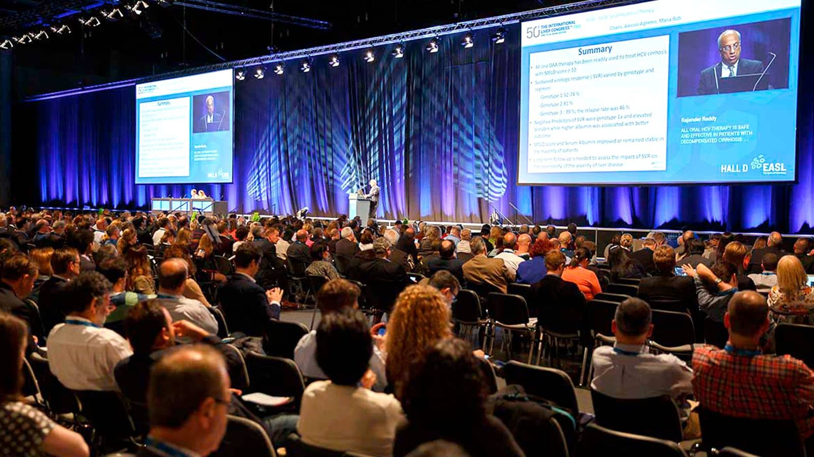

Los congresos serán objetos de un estudio mucho más amplio, especialmente pensando en su gran importancia. Consisten en reuniones a gran escala, de carácter abierto y organizado para divulgar ideas o diseñar objetivos.
Se considera espacialmente importante por su envergadura. Exigen un proceso de planificación muy amplio y la creación de un comité organizador, que asume la responsabilidad plena, siempre en contacto con el operador del mismo.
Sus características hacen inviable considerar que existe una mecánica específica para todos los congresos, por lo que su tratamiento debe ser individualizado.
La convocatoria de los congresos, realizada generalmente a plazos muy amplios, corresponde a asociaciones, universidades, colegios profesionales u otras sociedades, y van dirigidas a profesionales específicos, que contribuyen a su financiación con las cuotas de inscripción.